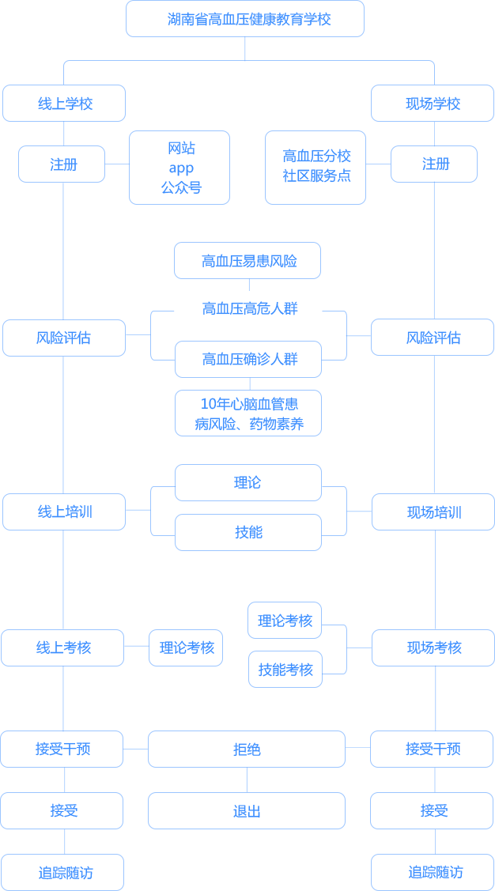

<%- include('ejs/head') %>
<body>
<%- include('ejs/header') %>
<div class="isBodyWapper isBodyBg">
    <div class="Y_banner Y_Sbanner">
        <div class="Y_bannerCon">
            
        </div>
    </div>
    <div class="Y_SlowDisWrap clearfix Y_Swrap">
        <div class="Y_wrapCon1">
            <div class="Y_SwrapCon1_con">
                <h2>湖南省高血压病人健康教育学校<span></span></h2>
                <p>随着人口老龄化，以高血压为首的慢性非传染性疾病已成为我国居民头号健康杀手。根据国家2016年6月发布的《中国心血管疾病报告2015》数据显示，2010年中国约有2.7亿高血压病人，该年因高血压死亡共计204.30万例。2013年高血压的直接经济负担占我国卫生总费用的6.61%，约2100亿元。由此可见，2016年国务院颁布的《“健康中国2030”规划纲要》中明确提出“共享共建，全民健康”的战略主题，强调要加强健康教育，提高全民健康素养，推进全民健康生活方式行为，建立健全健康促进与教育体系，提高健康教育服务能力，普及健康科学知识。针对高血压此类的慢性病，创新医疗卫生服务供需模式，借用生态理论模式建立“个人、家庭、社区、医疗机构、社会、互联网”从微观到宏观的全方位高血压有效防控体系，利用高血压健康教育学校这一载体，实现高血压病人的自我管理，血压持续达标。</p>
                <p>湖南省高血压健康教育学校挂靠在湖南省高血压研究中心下，由政府主导、专家主持、社会家庭个人齐头并进的协同参与，借助互联网技术实现“线上学校”与“现场学校”两种形式的交互运行。在组织运作中：第一步：由国内外心血管知名专家担任首席指导专家，并成立“湖南省高血压防治专家委员会”为我省基层高血压防治工作进行指导，并参与高血压健康教育学校的师资培训与授课。第二步：在湖南省内由各基层推荐优秀青年骨干医务人员组成“高血压健康教育讲师团”，并完成集中培训与考核，合格者授予“高血压健康教育讲师资格证”；第三部：再由讲师所在的机构如：各地、州、市、县、社区等基层机构建立“湖南省高血压健康教育学校分校”，实现高血压防治的知识、理念、技能传递，并形成防控网络；第四步：利用手机终端的APP或微信公众号关注，实现监控人群的数据采集与监测、信息的回传。四个步骤将实现我省高血压病人的健康管理与实时监测，提升血压达标率。</p>
                <p>根据《中国高血压患者健康教育指南》设立学校的患者教育的课程体系与考核内容，课程内容包括理论课程体系和实践课程，理论课程分三部分，第一部分：高血压并基本知识、发生发展、高危因素及危害；第二部分：高血压的治疗及日常生活注意点，第三部分：高血压的管理；实践课程包括了：自测血压、腹围、体重；体位性低血压的预防；各类风险评估表的风险自评。每一位高血压患者或易患人群通过高血压学校的学习能掌握高血压的防控相关知识与技能，并能在医生指导或协助下使血压达标，减少并发症，提高生活质量。</p>
                <p>线上学校实现24小时开放注册登记与培训考核，现场学校分期接受学员注册登记集中培训考核，并予以一对一的实践操作指导和问题解答；协助完成各类风险评估，并根据结果制定个体化的健康提升计划，实施陪伴干预策略。学校教育培训实施路径具体如下：
                </p>
            </div>
        </div>
        <div class="Y_wrapCon1">
            <div class="Y_SwrapCon1_con">
                <h2>湖南省高血压病人健康教育学校<span></span></h2>
                
            </div>
        </div>
    </div>
</div>
<%- include('ejs/footer') %>
<%- include('ejs/foot') %>
</body>
</html>